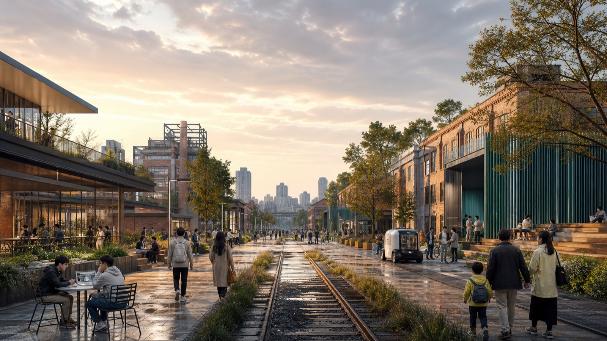
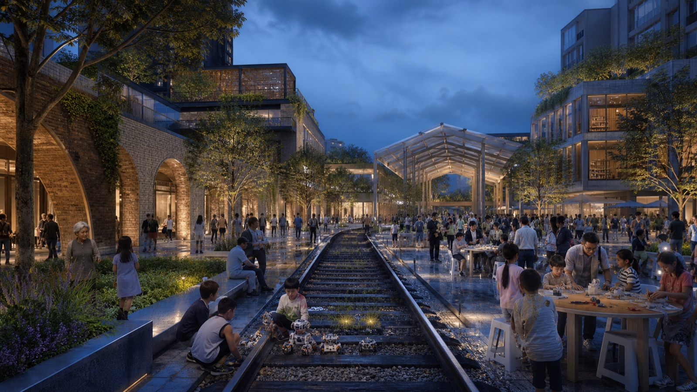
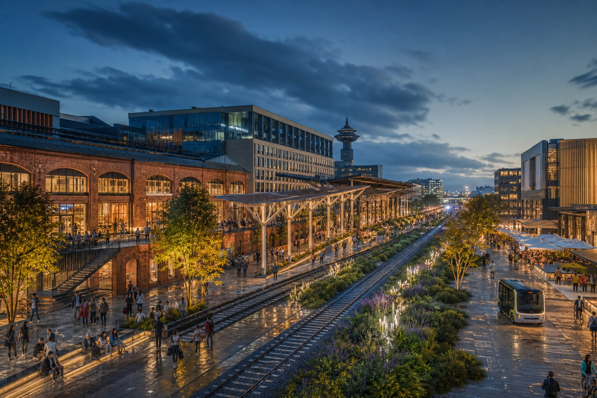

Zhongzhiyuan · Full-Stack ValleyHeritage reuse × R&D collaboration × public green valley
A heritage cultural axis runs north-south, anchored by Zhongzhiyuan, the AI Origin Community and Dazhongsi, with a slow-mobility loop, a blue-green loop and 13 scenario/landmark concept nodes. All spatial proposals are conceptual material for professional teams to deepen.



AI-generated concept scenes communicate atmosphere and use vision only. They are not evidence of existing conditions, boundaries, metrics or engineering feasibility.
One axis: the Jing-Zhang heritage cultural greenway. Three cores: Zhongzhiyuan Full-Stack Valley, AI Origin Community Open-Source Blocks, Dazhongsi Intelligent Commerce City. Two loops: slow-mobility vitality and blue-green ecology. Multiple nodes: 10 AI scenario nodes plus 3 pilgrimage landmark concept nodes forming the Origin Trail.
| Area | Role | Provisional extent |
|---|---|---|
| Zhongzhiyuan Full-Stack Valley | Full-stack innovation & governance display | ≈192.1 ha |
| AI Origin Community | Tech transfer & talent community | ≈104.3 ha |
| Dazhongsi Commerce City | AI-native commerce & global exchange | ≈72.0 ha |
Control metrics (FAR, height, etc.) are registered as unknown pending official conditions; performance metrics require operational calibration and no values are fabricated. See metrics.json.
| # | Name | Location | Description |
|---|---|---|---|
| 01 | Open-Source Release Hall | Origin Community | Release, contribution display, mini roadshows |
| 02 | AI Governance Sandbox | Zhongzhiyuan | Standards, safety evaluation, red-team display |
| 03 | Edge-Compute Hub | Dazhongsi & nodes | Lightweight new-infrastructure prototype |
| 04 | AI Slow-Mobility Wayfinding | Heritage axis | Gap detection, interpretable wayfinding |
| 05 | International Roadshow Hall | Dazhongsi | Display, negotiation, media release |
| 06 | Qinghe Low-Carbon Corridor | Zhongzhiyuan riverfront | Blue-green space plus AI display |
| 07 | Near-Campus Transfer Street | Origin Community | Incubation, legal, IP, investment |
| 08 | Data-Element Reception Hall | Dazhongsi | Compliant, auditable data-service interface |
| 09 | AI Daily-Life Service Street | Community-commerce edge | AI+ medical, education, legal, daily services |
| 10 | Global AI Week Route | Belt-wide public space | Walkable, shareable experience route |
The Jing-Zhang AI Contributor Avenue: updatable plaques and a digital contribution wall with annual inscription. Component library: smart seating, interpretable wayfinding, modular pavilions. Annual events: spring Developer Week, summer Scenario Open Days, autumn Culture-AI Biennale, winter Contributor Conference.
| Task | Requirement | Response | Status |
|---|---|---|---|
| agent.1 | Concept, naming, logo direction | JZ-AI Origin Belt, gauge-line/data-stream motif | Covered |
| agent.2 | Ecosystem & benchmarking | 6 global cases, factor-space-operation mechanisms | Covered |
| agent.3 | Scenario cards, personas, testing | 10 cards, 5 personas, 3 industry testing scenarios | Covered |
| agent.4 | AI public space & landmarks | 3 landmark concept nodes, Contributor Avenue, component library | Covered |
| agent.5 | Cultural narrative | Jing-Zhang / Zhongguancun / AI narrative & wayfinding | Covered |
| agent.6 | Events & long-term operations | Annual events, developer community, scenario opening | Covered |
| 1.3 / 1.4 / 1.5 | All announcement tasks | compliance_matrix.json | Covered |
Key areas are provisional (formal-readiness note)